Intelligence is hierarchical
Real intelligence is hierarchical. Low-level control is handled by simple circuits in the central nervous system, called central pattern generators (CPGs). These use physical structure to produce unconscious, rhythmic signals for walking, flying, and swimming, freeing the brain for higher-level control and decision making.
No fancy algorithms!
The default in machine learning is to reach for data, but old-school engineers first look for mechanical, analogue, or physically-informed solutions because they are simpler, more reliable, and cheaper. Good mechanics compensates for bad software. Software will never compensate for bad mechanics.
Statistical models work better with task-specific priors. Engineering systems are the same. Bake structure into the mechanism and the control loop has less work to do. There are no controllers in any of these clips:
The mechanics does the work that a controller would otherwise be asked to do.
The locomotion problem
Legs are nonlinear, contact dynamics are discontinuous, and the controller has to handle disturbances in real time. All on frequency-limited hardware! There are a couple examples on how it can be modeled:
Data-heavy. Millions of frames to fit encoder + predictor + policy. Three networks at inference. Latent state opaque, errors compound on long horizons. No inductive bias for periodicity.
Compute-heavy, solves an optimization problem at every control cycle. Real-time only with an accurate \(f\), a short horizon, and warm-starts. Can be brittle and model-mismatched.
Structure-heavy. Rhythm lives in an ODE with a few analog parameters. No learning, no online optimisation. Robust by limit-cycle attraction.
Above the locomotion layer
Above the locomotion layer sits high-level intent and decision-making, the policy that chooses what to do: "walk to the door", "pick up the cup". Vision-Language-Action models (VLA) are the frontier. Take a pre-trained vision-language model (VLM), already grounded in objects, scenes, and language through web-scale pretraining, and co-fine-tune it to emit robot actions. The model inherits the VLM's world knowledge without more pretraining.
Examples include:
A pre-trained VLM is paired with a flow-matching generative model to produce motor control. At inference, the flow matching vector field is integrated over ~10 Euler steps (fast) to produce an action chunk, (a sequence of 50 future motor commands, i.e., 1 second of continuous control at 50 Hz), rather than single actions. It performs dexterous bimanual manipulation end-to-end, (e.g., folding laundry, bussing tables), with no separate controller.
A dual-system architecture pairing a slow VLM as System-2 for high-level reasoning and a high-rate transformer as System-1 for dexterous body control. This is the first VLA to control the entire humanoid upper body end-to-end, (arms, hands, torso, head, fingers). Somewhat analogous to brain -> central nervous system hierarchy.
Even at the frontier, locomotion and walking gaits aren't yet controlled by VLA. Stabilising leg joints and contact requires controllers running at hundreds of Hz, which is currently above the rate a VLM-scale model can produce, (for now). Helix runs its upper body through VLA but keeps the legs on a separate low-level loop.
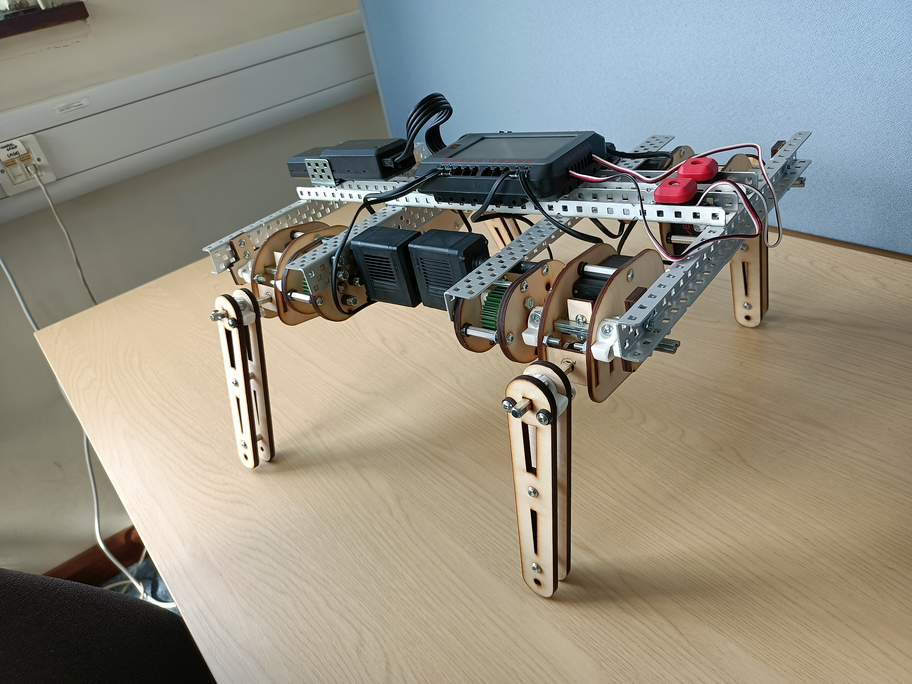
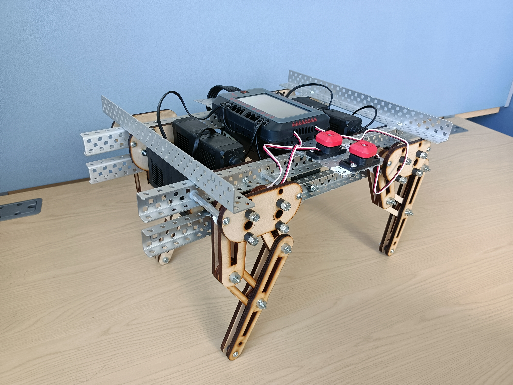
Screw the learning, skip the optimisation.
Build a circuit whose dynamics are the gait. Central pattern generators are nature's answer to the locomotion problem.
These are tiny neuronal circuits, typically in the spinal cord. Each neuron can be modeled computationally using the Multi-Quadratic Integrate-and-Fire (MQIF) neuron ( arXiv 1709.06824 ): a three-state ordinary differential equation (ODE) with a fast voltage \(V\), a slow recovery variable \(V_s\), an ultra-slow modulator \(V_{us}\), and a hard reset on \(V\).
There are other neuron models, but this one was analytically simpler to design and tune:
\[ \begin{aligned} C\, \dot V \;&=\; I + g_f (V - V_0)^2 - g_s (V_s - V_{s,0})^2 - g_{us} (V_{us} - V_{us,0})^2, \\ \dot V_s \;&=\; (V - V_s) / \tau_s, \\ \dot V_{us} \;&=\; (V - V_{us}) / \tau_{us}, \end{aligned} \]
with reset map
\[ V > V_{th} \;\;\Longrightarrow\;\; V \leftarrow V_{reset}, \quad V_s \leftarrow V_{s,reset}, \quad V_{us} \leftarrow V_{us} + \Delta_{us}. \]
The ODE is characterised by 3 timescales:
- fast (\(\tau_V \sim C/250\) ms) - governs spike kinetics.
- slow (\(\tau_s \sim 2\) ms) - governs within-burst spike rate.
- ultra-slow (\(\tau_{us} \sim 80\) ms) - governs burst envelope.
On the timescale of a single spike, \(V_{us}\) barely moves. It can be treated as a fixed parameter so the \((V, V_s)\) subsystem becomes 2D.
Its equilibria satisfy \(\dot V = \dot V_s = 0\), so \(V^{\star} = V_s^{\star}\) and
\[ g_f (V^{\star} - V_0)^2 \;=\; g_s (V^{\star} - V_{s,0})^2 + g_{us} \underbrace{(V_{us} - V_{us,0})^2}_{O(V_{us}^2)} - I. \]
The right-hand side grows quadratically in \(V_{us}\), so the flow of \((V, V_s)\) flips with \(V_{us}\). When:
- \(V_{us} \approx V_{us,0} \rightarrow\) right-hand side is small, the equilibrium is unstable and the 2D flow is a tonic-spiking limit cycle
- \(V_{us}\) far from \(V_{us,0} \rightarrow\) right-hand side dominates the depolarising drive, yielding a stable equilibrium, so the 2D flow rests
At the critical value \(V_{us}^{\star}\), the equilibrium loses stability and a small oscillation appears in its place. That switch is a Hopf bifurcation , (the means by which an ODE flips from resting at a fixed point to orbiting a limit cycle as a state variable crosses some critical value).
\(V_{us}\) slowly traverses \(V_{us}^{\star}\) in both directions, and that's what creates bursts.
Each spike kicks \(V_{us}\) up by \(\Delta_{us}\). After a few spikes \(V_{us}\) crosses \(V_{us}^{\star}\) and the fast subsystem silences. With \(V\) at rest, \(V_{us}\) decays back, crosses \(V_{us}^{\star}\) the other way, and the next burst starts.
The closed three-dimensional loop is a stable limit cycle - a periodic trajectory that nearby states are attracted to. Push the neuron, the dynamics pull it back to the cycle.
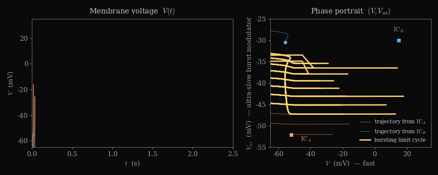
Half-centre CPG
A half-centre CPG is two coupled MQIF units \(A\) and \(B\) with inhibitory synapses.
Each synapse has a gating variable \(s\) that lags pre-synaptic activity with time constant \(\tau_{syn}\) and feeds back as an inhibitory current with conductance \(g_{syn}\):
\[ \tau_{syn}\, \dot s_{AB} \;=\; \sigma(V_A - V_{syn}) - s_{AB}, \qquad I_B \;=\; I_{ext} - g_{syn}\, s_{AB}, \]
and symmetrically for the \(B \to A\) synapse, where \(\sigma\) is the sigmoid function.
When \(A\) bursts, \(s_{AB}\) saturates near 1 and the inhibitory current to \(B\) holds it silent. Once \(V_{us}\) of neuron \(A\) surpasses \(V_{us}^{\star}\) and bursting dies, \(s_{AB}\) decays, the inhibition lifts, and \(B\) fires and in turn silences \(A\). The pair alternates with no external clock. This is a half-centre CPG oscillator .
Phase selects gait
Four units connected like above in a directed inhibition graph give a quad-centre CPG, one neuron per leg. The graph's adjacency matrix encodes phase relationships: which legs inhibit which, which pairs synchronise, which alternate. Different inhibition patterns select different gaits ( CPG review ):
Stance windows per leg, time along x. Front-left (FL) and front-right (FR) are top/orange, back-left (BL) and back-right (BR) are bottom/purple-ish. Same four units, different inhibition adjacency. Walk : four-beat sequence (one leg at a time). Trot : diagonal pairs sync. Bound : front pair (FL+FR) synced, then back pair (BL+BR).
Adaptation
When input current \(I\) is raised and the firing rate increases, gait frequency climbs with it. Swap the inhibition graph and the gait swaps. A handful of hyperparams/inputs replaces an entire neural network!
This TED talk on a CPG-driven salamander robot shows how robust the idea is. Swimming is typically a difficult control problem, but CPGs handle it naturally.
The Build
1. Motor degrees of freedom
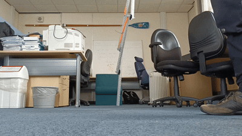
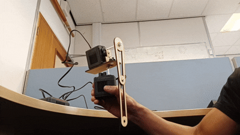
The dog leg featured two antagonistic joints (later replaced by motors) joined by an elastic band acting as a tendon. Joints rotating together swung the leg, rotating against extended/contracted it.
2. Mechanical strength
The motors alone could not carry the payload :(
Fixed in 3 ways:
- gear ratios for torque, \(\sim 3:1\) force multiplication
- double-side axle support - otherwise cantilevered axles bend, slip, and chew through
- leg tuned for shear and laser-cut narrow where moments were large
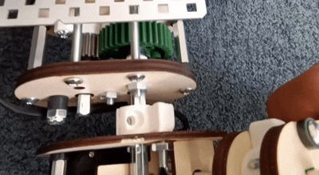
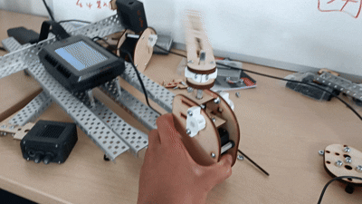
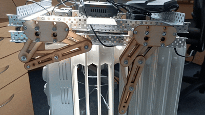
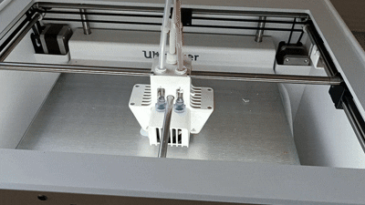
3. Finished legs
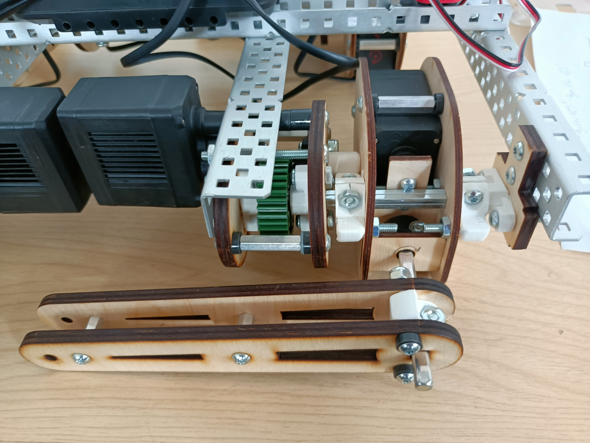
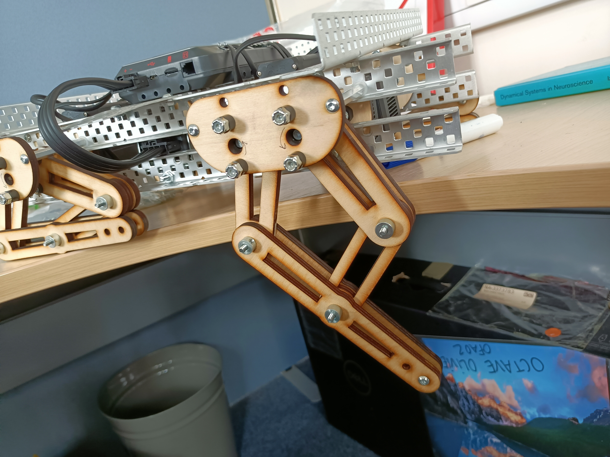
4. The gaits
MQIF units, half-centre and quad-centre coupling, implemented in Simulink. No neural network, no MPC solver, no online optimisation.


In nature, locomotion is resolved by attractor dynamics.
For rhythm does not need to be learned.
It's in our wiring ;)